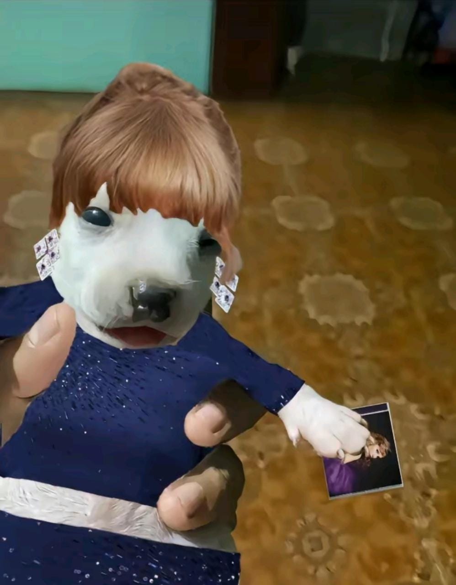

<div class="wrapper"> 

    <h1>Ampliar la parte de la imagen por donde pasa el ratón</h1>
    
        <!-- imagen a tamaño normal -->
    
        <div>
    
            
    
            <div id="square"></div>
    
        </div>
    
     
    
        <!-- miniatura donde se visualizar la imagen ampliada -->
    
        <div id="imgSmall">
    
            
    
        </div>
       
     <div class="fuente">
       <a href="http://www.lawebdelprogramador.com/codigo/JQuery/2524-Efecto-lupa-al-pasar-el-raton-por-encima-de-una-imagen.html">Click para ir a la fuente del proyecto - Hilo en el foro "La Web del Programador LWP"</a>
     </div> 
     </div>
    
    